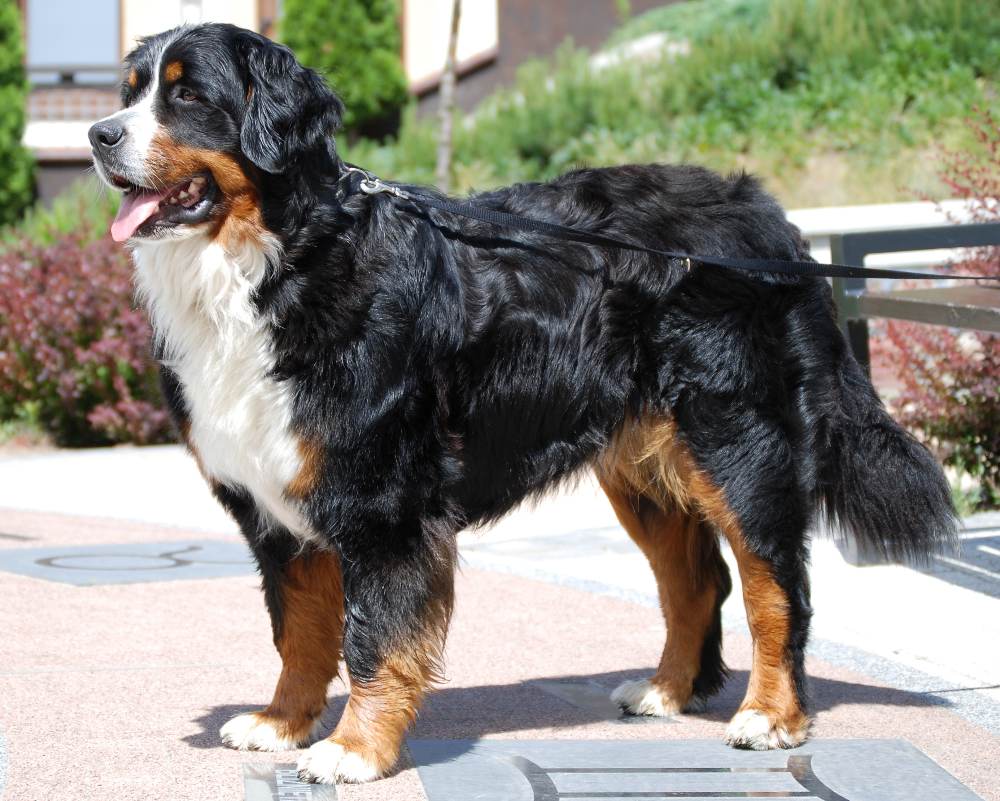

Once you have decided that you intend to get a new dog, it is important to consider what breed would be the best match for you and your family. Here are 10 common breeds that fit different lifestyles:
If you are someone who lives an active lifestyle, consider: Labrador Retriever!
Friendly, outgoing dogs
Affectionate and obedient
Medium to Large in Size
Great with children
Need plenty of space/exercise
High energy
Shed a lot
If you have a busy schedule and are not as active, consider: French Bulldog!
As of 2023, the most popular breed in the U.S.!
Playful and alert
Small in Size, suitable for young children
Quiet (do not bark a lot)
Great with children
Sheds an average amount
Sensitive to temperature
Prone to many health issues
If you live in an apartment, consider: Yorkshire Terrier!
Excitable but also snuggly!
Lively
Small in size
Need minimal exercise
Not well suited for families with young children
Slight shedding
Sassy
Barks a lot
If you are allergic to dogs, consider: Miniature Schnauzer!
Alert, protective dogs
Highly intelligent/easy to train
Hardly shed/produce few allergens
Great for families
Small to medium in size
Need moderate exercise
Barks a lot
Prone to some health issues
If you hate shedding, consider: Shih Tzu!
Affectionate
Great for families
Great lapdogs/spends time indoors
Rarely shed
Prone to some health issues
Barks a lot
Needs minimal exercise
If you want a small dog, consider: Cavalier King Charles Spaniel!
Low maintenance in terms of space and exercise
Very small, portable
Easy to train
Good with children
Do not bark a lot
Prone to health issues
Need regular grooming
Do not like to be alone
If you want a medium sized dog, consider: Siberian Husky!
Intelligent, low temperament
Playful
Independent
Very clean
Not great for homes with other pets
Need lots of exercise
Stubborn
Heavy shedding
If you want a large dog, consider: Bernese Mountain Dog!

Sweet and affectionate
Great with children
Easy to train
Protective/li>
Very large in size
Prone to health issues
Short life span
Heavy shedders
If you want a quiet dog, consider: Rottweiler!
Loyal and calm
Great with families
Easy to train
Prone to health issues
Destructive when bored
Require lots of training
Does not bark a lot
Heavy shedders
If you want a highly trainable dog, consider: Boxer!
Highly intelligent
Playful and loving
Very energetic
Cannot tolerate extreme weather/li>
Skin and allergy issues
Require lots of exercise
Hopefully this list can help you decide what breeds are right for you! If you are looking for more tips, check out this informational video below. Good luck!